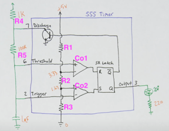
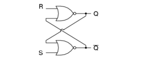
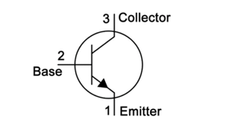
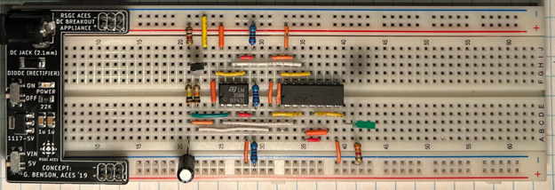
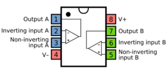
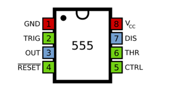

2023 · Timing Circuits
555 Time Machine
Built both a deconstructed 555 timer and a compact 555 IC oscillator to understand how comparators, an SR latch, a transistor, resistors, and capacitors create a square-wave timing signal.

Video Demonstration
Working demonstration
The project video shows the physical build, behaviour, and final result.
 ▶ Watch on YouTube
▶ Watch on YouTube
Project Overview
Understand the 555 timer from the inside out.
Instead of treating the 555 as a black box, this project broke the chip into functional blocks and rebuilt the timing behaviour using discrete parts.
What I built
- Deconstructed 555 timer prototype
- Astable square-wave circuit
- Comparator and latch explanation graphics
- Compact 555 IC implementation
Technical Skills
Skills demonstrated
Timer circuits
Applied directly in the design, build, debugging, or final integration of the project.
Comparator logic
Applied directly in the design, build, debugging, or final integration of the project.
Latch behaviour
Applied directly in the design, build, debugging, or final integration of the project.
Analog/digital hybrid debugging
Applied directly in the design, build, debugging, or final integration of the project.
Build Story
555 timer internals and physical prototypes
Internal 555 architecture
The image to the right shows the SR latch diagram used to explain how the 555 stores its output state between threshold and trigger events.

SR latch behaviour
The image to the right shows the 2N3904 transistor pinout used to understand the discharge-control portion of the timer circuit.

555 IC prototype
The image to the right shows the deconstructed 555 timer breadboard prototype, where the timer’s internal blocks are recreated with separate chips and components.

Comparator pinout
The image to the right shows the LM358 operational amplifier pinout used for the comparator stages in the deconstructed timer.

Timer IC pinout
The image to the right shows the 555 timer IC pinout used for the compact IC-based oscillator prototype.
